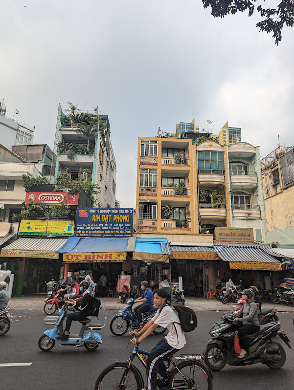

One of the first things I noticed when traveling around Vietnam and
Southeast Asia broadly is that people love their motorbikes

With a population of nearly 100M people and growing, I wanted to
understand what is the impact of all these motorbikes on the environment,
society, and how will this change in the coming years as Vietnam becomes
richer and our planet gets hotter?
Vietnam has experienced rapid population growth and economic development
through the end of the 20th century and into the 21st
It has gone from 70 million people to 100 million in just the last 30
years
The country has experienced exponential economic growth, and consequently
carbon emissions have come along for the ride
As the population and economy has grown, so has motorbike ownership
What has been the impact of all these motorbikes on carbon emissions and
air pollution?